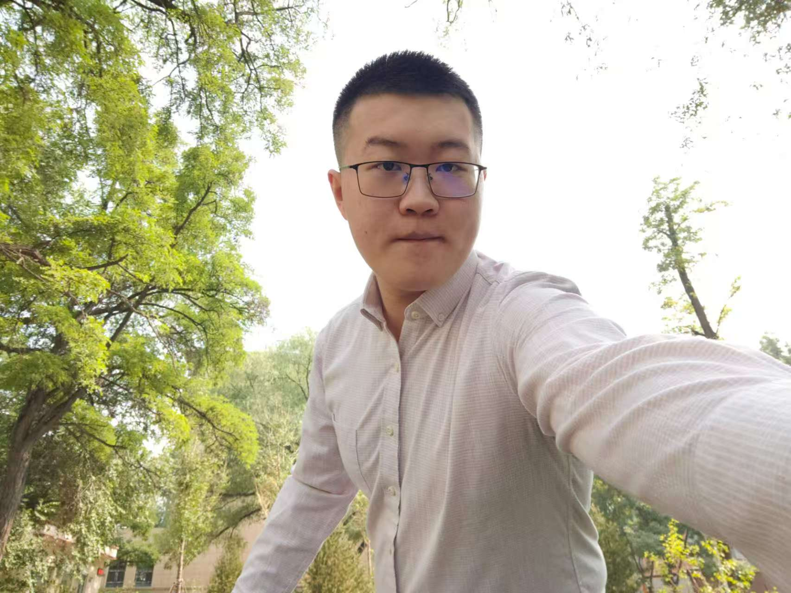
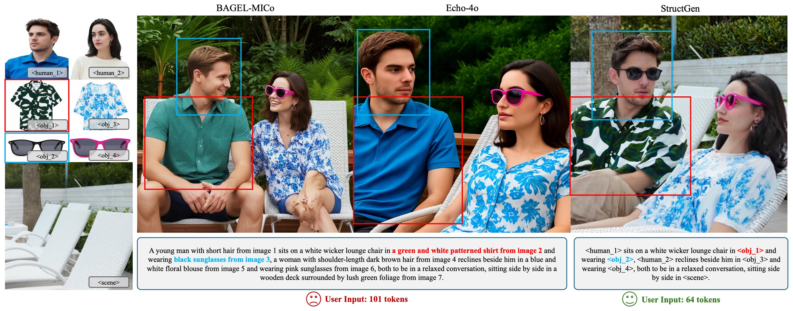
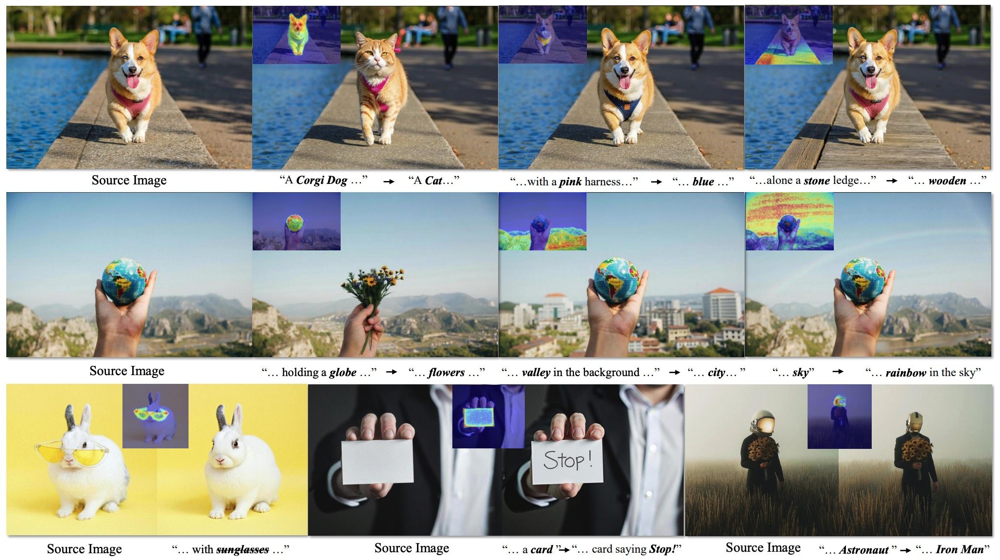
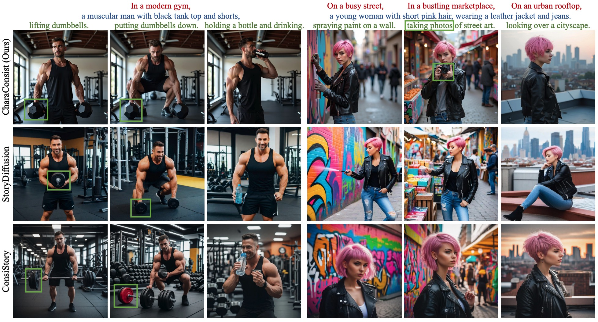
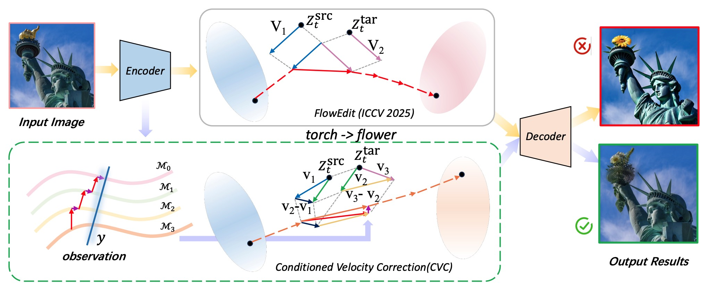

|
Jianing Peng
I am a first-year PhD student in Computer Science and Technology at Beijing Jiaotong University, supervised by Prof. Yunchao Wei. My research focuses on image generation and editing, particularly in diffusion models and unified generative models.
Previously, I earned my bachelor's degree from Beijing Jiaotong University in 2025, ranking 1st out of 64 students. I am also a research intern at MT Lab, Meitu Inc, working on image generation, image editing, and agentic systems for visual creation.
Email /
Google Scholar /
GitHub /
CV
|

|
Research Interest
Visual creation is a fundamental and enduring challenge in AI, aiming to faithfully translate user intent into customized imagery. My long-term goal is to build intelligent visual-creation systems that fulfill such customized needs. My research lies in (1) advancing generative models via training, data, and evaluation, and (2) orchestrating visual creator agents for complex creative intent. My interested topics are as follow:
|
|
Image Generation
Image Editing
Diffusion Models
Diffusion Transformers (DiT)
Unified Multimodal Models
Agentic Systems
|
|

|
StructGen: Disambiguating Multi-Reference Image Generation via Structured Context Modeling
Jianing Peng*, Mengyu Wang*, Henghui Ding, Zixiang Li, Ting Liu, Xiaochao Qu, Luoqi Liu, Yao Zhao, Yunchao Wei†
ACM MM 2026
page /
paper /
code
A framework for human-centric multi-reference image generation that disambiguates references through structured context modeling.
|
|

|
DCEdit: Dual-Level Controlled Image Editing via Precisely Localized Semantics
Yihan Hu, Jianing Peng, Yiheng Lin, Ting Liu, Xiaochao Qu, Luoqi Liu, Yao Zhao, Yunchao Wei†
ACM MM Workshop 2025
paper /
code
A plug-and-play image editing method that achieves precise local edits through dual-level control at both feature and latent levels.
|
|

|
CharaConsist: Fine-Grained Consistent Character Generation
Mengyu Wang, Henghui Ding, Jianing Peng, Yao Zhao, Yunpeng Chen, Yunchao Wei†
ICCV 2025
paper /
code
A training-free method for DiT models that achieves fine-grained character consistency across images using point-tracking attention.
|
|

|
On Exact Editing of Flow-Based Diffusion Models
Zixiang Li, Yue Song, Jianing Peng, Ting Liu, Jun Huang, Xiaochao Qu, Luoqi Liu, Wei Wang, Yao Zhao†, Yunchao Wei
Under Review, AAAI 2027
paper
An inversion-free image editing method that reformulates flow-based editing through conditioned velocity correction for local edits.
|
Skills
Programming Languages: Python, C++, C, LaTeX, Markdown
Deep Learning Frameworks: PyTorch, Diffusers, Transformers
Languages: Chinese (Native), English (CET4: 623, CET6: 590)
|
|
{kind=link}